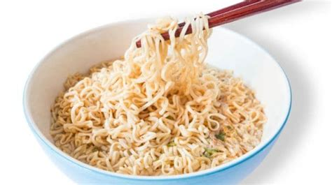

How to make an instant noodle

Instant noodles aren't known for it's health benefits but some people have to rely on it
as their main meal for dinner.
I believe they are alright for once in a while though.
contents
- a package of instant noodle from your local grocery store
- boiling water
- an egg
- some vegetables that'd go along with noodle
- a pot
- fire
- fork or chop sticks
Step by step follow through...
- unpack the instant noodle package
- put the square looking curly noodle lookalike into the pot
- pour boiling water into it and heat up the pot from below
- chop the veggies
- break the egg
- unpack seasoning packages
- put the egg and veggies and seasonings into the pot
- stir it up a bit
- turn off the gas or extinguish the fire ( unless you got other things to do with it )
- eat it using chopstick or fork and enjoy your belly filling up with food